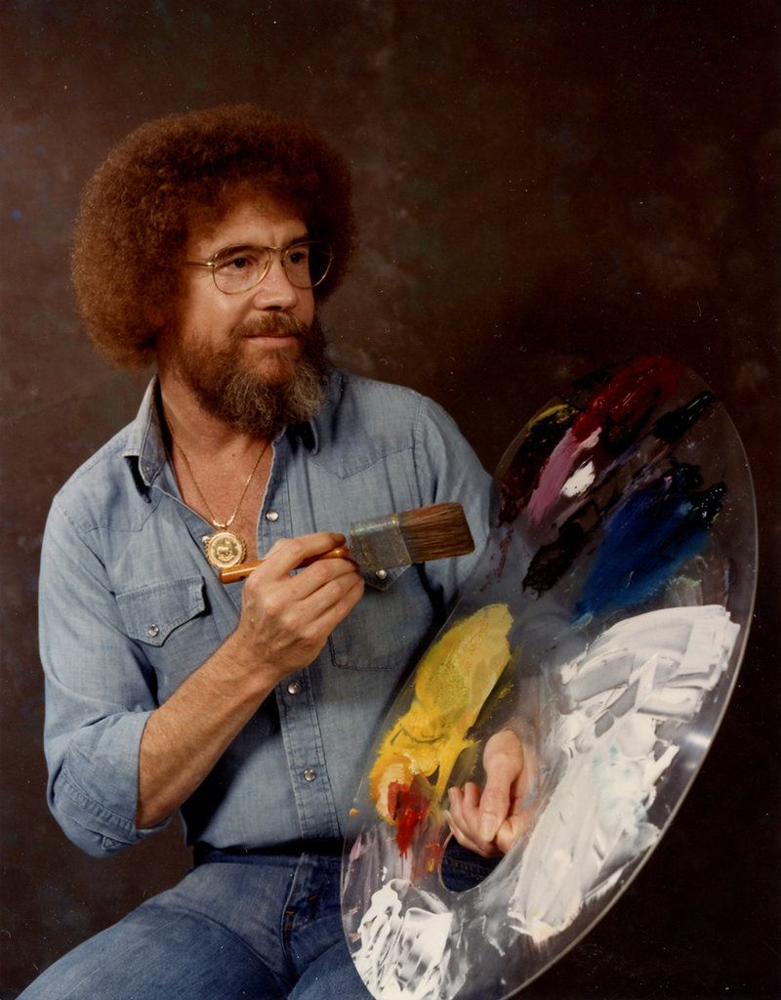

Bob Ross Ipsum
And I know you're saying, 'Oh Bob, you've done it this time.' And you may be right. There it is. Let's give him a friend too. Everybody needs a friend. Maybe there was an old trapper that lived out here and maybe one day he went to check his beaver traps, and maybe he fell into the river and drowned. In your world you have total and absolute power. It all happens automatically. Remember how free clouds are. They just lay around in the sky all day long. Fluff that up. Let's just drop a little Evergreen right here. If you hypnotize it, it will go away. You are only limited by your imagination. Talent is a pursued interest. That is to say, anything you practice you can do. If you've been in Alaska less than a year you're a Cheechako. Poor old tree. That's a son of a gun of a cloud. Maybe he has a little friend that lives right over here. This present moment is perfect simply due to the fact you're experiencing it. That's what makes life fun. That you can make these decisions. That you can create the world that you want. I like to beat the brush. Do an almighty painting with us. I thought today we would make a happy little stream that's just running through the woods here. That easy. These trees are so much fun. I get started on them and I have a hard time stopping. You want your tree to have some character. Make it special. We can always carry this a step further. There's really no end to this. And I will hypnotize that just a little bit. We'll put a happy little bush here. It's important to me that you're happy. These little son of a guns hide in your brush and you just have to push them out. I think there's an artist hidden in the bottom of every single one of us. Talk to trees, look at the birds. Whatever it takes. Use what you see, don't plan it. But we're not there yet, so we don't need to worry about it. This is gonna be a happy little seascape. Let's put some happy trees and bushes back in here. There isn't a rule. You just practice and find out which way works best for you. I get carried away with this brush cleaning. You can spend all day playing with mountains. Very easy to work these to death. I spend a lot of time walking around in the woods and talking to trees, and squirrels, and little rabbits and stuff. Now, we're going to fluff this cloud. Without washing the brush, I'm gonna go right into some Van Dyke Brown, some Burnt Umber, and a little bit of Sap Green. Let's go up in here, and start having some fun Tree trunks grow however makes them happy. Let's make some happy little clouds in our world. A beautiful little sunset. Those great big fluffy clouds. Everyone is going to see things differently - and that's the way it should be. Just use the old one inch brush. Let's put some highlights on these little trees. The sun wouldn't forget them. This piece of canvas is your world. We'll put some happy little leaves here and there. Anything you want to do you can do here. In life you need colors. The little tiny Tim easels will let you down. Just a little indication. It just happens - whether or not you worried about it or tried to plan it. The first step to doing anything is to believe you can do it. See it finished in your mind before you ever start. Now we'll take the almighty fan brush. We want to use a lot pressure while using no pressure at all. Each highlight must have it's own private shadow. Just pretend you are a whisper floating across a mountain. Have fun with it. Now then, let's play. Nothing wrong with washing your brush. You can do anything here. So don't worry about it. Maybe, just to play a little, we'll put a little tree here. Let's have a little bit of fun today. It's life. It's interesting. It's fun.
Let all these things just sort of happen. You got your heavy coat out yet? It's getting colder. We'll put some happy little leaves here and there. Don't hurry. Take your time and enjoy. Just think about these things in your mind - then bring them into your world. If these lines aren't straight, your water's going to run right out of your painting and get your floor wet. I sincerely wish for you every possible joy life could bring. I guess I'm a little weird. I like to talk to trees and animals. That's okay though; I have more fun than most people. We want to use a lot pressure while using no pressure at all. We'll paint one happy little tree right here. Only God can make a tree - but you can paint one. If what you're doing doesn't make you happy - you're doing the wrong thing. We must be quiet, soft and gentle. You don't want to kill all your dark areas they are very important. These things happen automatically. All you have to do is just let them happen. I thought today we would do a happy little picture. Every highlight needs it's own personal shadow. Let's put a touch more of the magic here. In your imagination you can go anywhere you want. Let's get wild today. If you don't think every day is a good day - try missing a few. You'll see. It's life. It's interesting. It's fun. It's all a game of angles. You better get your coat out, this is going to be a cold painting. You can create the world you want to see and be a part of. You have that power. If I paint something, I don't want to have to explain what it is. It's a good way of getting rid of all your anxieties and hostilities. Let's build an almighty mountain. We have all at one time or another mixed some mud. Don't fight it, use what happens. We artists are a different breed of people. We're a happy bunch. In nature, dead trees are just as normal as live trees. There are no mistakes. You can fix anything that happens. I started painting as a hobby when I was little. I didn't know I had any talent. I believe talent is just a pursued interest. Anybody can do what I do. This is truly an almighty mountain. These trees are so much fun. I get started on them and I have a hard time stopping. Very easy to work these to death. We don't have to be committed. We are just playing here. You could sit here for weeks with your one hair brush trying to do that - or you could do it with one stroke with an almighty brush. You can do anything your heart can imagine. Go out on a limb - that's where the fruit is. We'll play with clouds today. When you do it your way you can go anywhere you choose. Play with the angles. For the lack of a better word I call them hangy downs. Let's put some highlights on these little trees. The sun wouldn't forget them. Automatically, all of these beautiful, beautiful things will happen. I get carried away with this brush cleaning. A fan brush is a fantastic piece of equipment. Use it. Make friends with it. You need the dark in order to show the light. Put it in, leave it alone. I think there's an artist hidden in the bottom of every single one of us. You can work and carry-on and put lots of little happy things in here. All you need is a dream in your heart, and an almighty knife. There we are. You can spend all day playing with mountains. From all of us here, I want to wish you happy painting and God bless, my friends. Just go out and talk to a tree. Make friends with it. Just let your mind wander and enjoy. This should make you happy. You have freedom here. The only guide is your heart. I really believe that if you practice enough you could paint the 'Mona Lisa' with a two-inch brush. We might as well make some Almighty mountains today as well, what the heck. Just make a decision and let it go. Even the worst thing we can do here is good. Remember how free clouds are. They just lay around in the sky all day long. Talk to trees, look at the birds. Whatever it takes. You have to make those little noises or it won't work. Just take out whatever you don't want. It'll change your entire perspective. Don't forget to tell these special people in your life just how special they are to you. Water's like me. It's laaazy ... Boy, it always looks for the easiest way to do things And I will hypnotize that just a little bit. Let's make a happy little mountain now. Everything's not great in life, but we can still find beauty in it. The only thing worse than yellow snow is green snow.